Press ESC or click outside to close
Presenters
Exploring modern methodologies, engineering practices, and innovative approaches that address the fundamental challenges in software development.
Explore SolutionsThe term "Software Crisis" was coined at the 1968 NATO Software Engineering Conference. It describes the difficulty of writing useful and efficient computer programs within the required time and budget.
Projects were running over budget, over time, producing low-quality software that didn't meet requirements — sometimes resulting in catastrophic failures. The gap between hardware capability and software delivery had become a crisis.
While computing hardware grew exponentially, software engineering faced catastrophic delays, budget overruns, and unmanaged complexity.
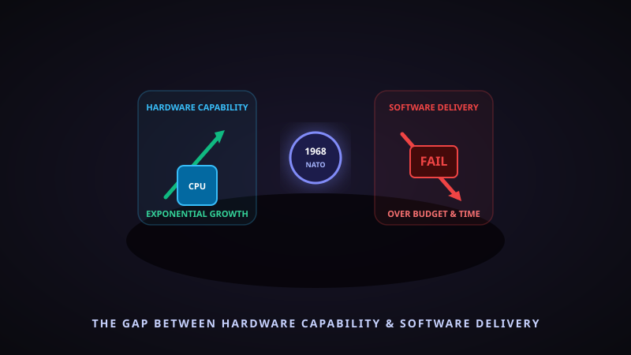
Click to enlargeProven strategies that have transformed how we build reliable software.
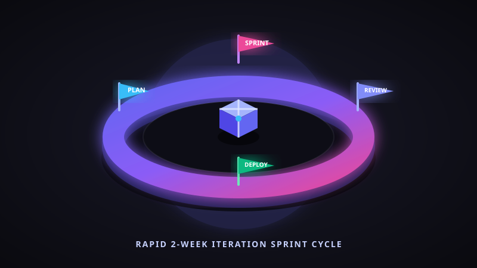
Click to enlargeInstead of building the entire software at once, Agile breaks work into small parts called sprints (1-2 weeks). After each sprint the team shows the work, gets feedback, and improves. This way problems are caught early and the product stays on track.
ProcessThink of building a house. Instead of building the whole house and showing it at the end, you first build one room, show it to the owner, take feedback, fix things, then build the next room. This way the owner gets exactly what they want.
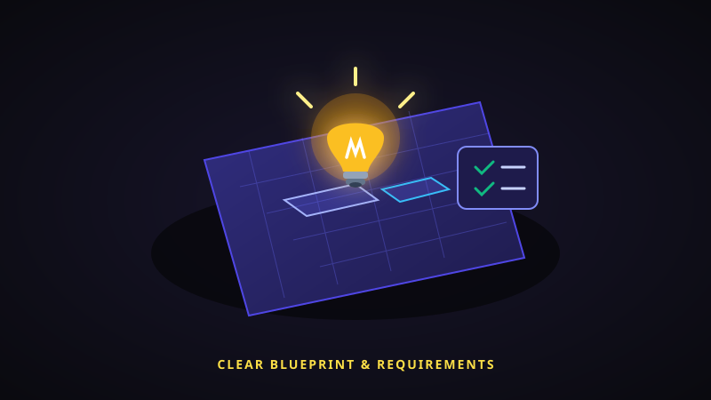
Click to enlargeBefore writing any code, clearly understand what the user needs. Talk to users, create mockups, and write down every requirement. Most projects fail not because of bad coding, but because the team built the wrong thing.
PlanningImagine ordering food without reading the menu — you'll get something you don't want. Similarly, if developers start coding without understanding what users need, they'll build the wrong features and waste months of work.
Test the software at every stage, not just at the end. Use unit tests, integration tests, and automated testing tools. A bug found during development costs 10x less to fix than one found after release.
QualityIt's like proofreading an essay after every paragraph instead of writing the whole essay first. If you wait until the end, one early mistake could mess up everything that follows — and fixing it takes much longer.
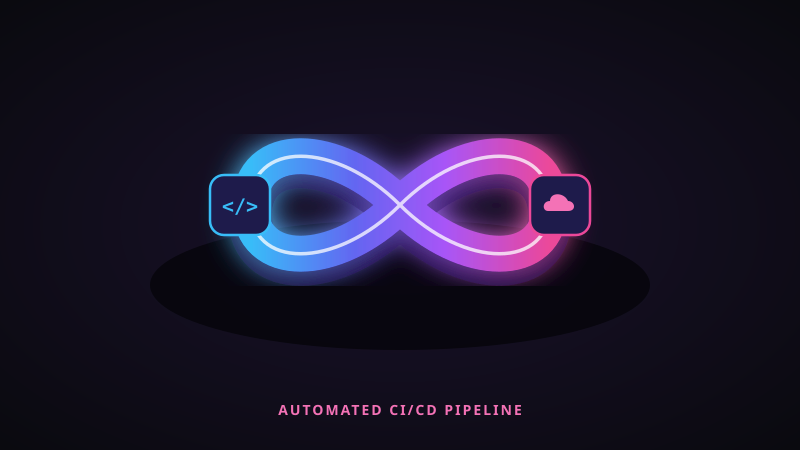
Click to enlargeAutomate the process of building, testing, and deploying code using CI/CD pipelines. Every time a developer pushes code, it is automatically tested and deployed. This removes human errors and speeds up delivery.
AutomationThink of an automatic car wash vs. washing by hand. The machine does the same quality job every time, faster, and without mistakes. CI/CD does the same for software — it automatically checks and delivers code without manual effort.
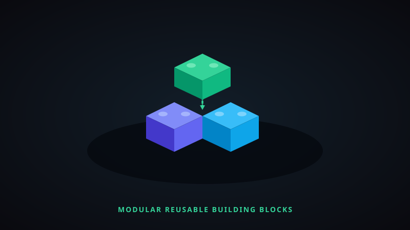
Click to enlargeDon't build everything from scratch. Use existing libraries, frameworks, and break your software into small reusable pieces.
ArchitectureLEGO blocks! You don't make new blocks every time — you reuse the same pieces to build different things. Similarly, developers reuse code components like login systems, payment gateways, etc. instead of writing them again.
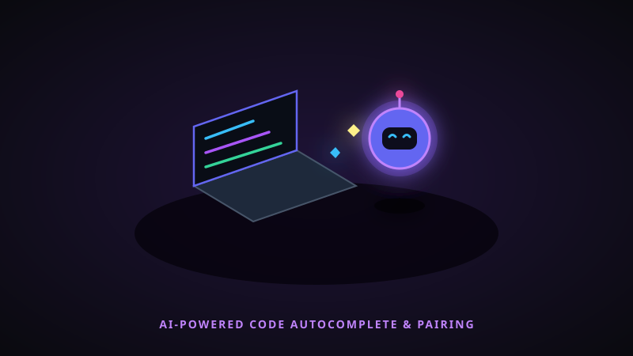
Click to enlargeUse AI tools to write code faster, auto-detect bugs, and help developers focus on solving the real problems instead of repetitive tasks.
InnovationJust like spell-check in Google Docs catches your typos while you type, AI coding tools like GitHub Copilot suggest code and catch bugs in real-time — so developers can work faster and make fewer mistakes.
Before solving a problem, we need to understand why it happens in the first place.
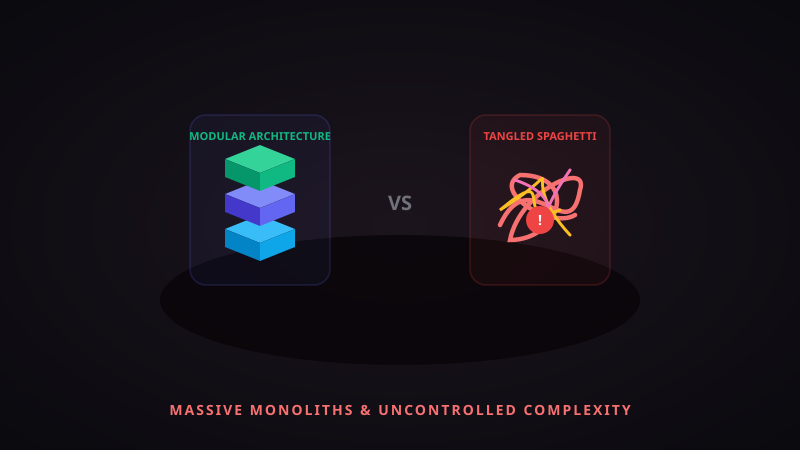
Click to enlargeSoftware systems keep getting bigger and more complex. A small app has thousands of lines of code, but enterprise software has millions — making it extremely hard to manage.
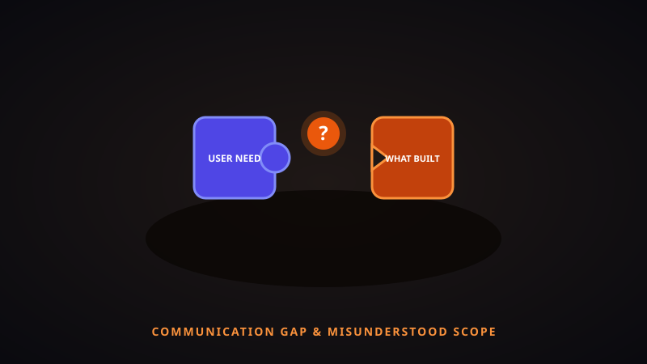
Click to enlargeMany projects fail because the team doesn't clearly understand what the client wants. Unclear or changing requirements lead to wrong features and wasted effort.
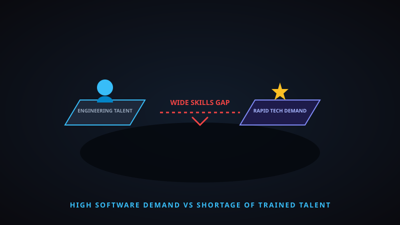
Click to enlargeNot enough trained software engineers to handle the growing demand. Untrained teams write poor quality code, leading to bugs, delays, and project failures.
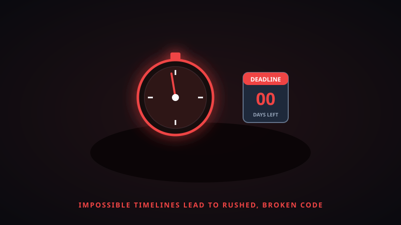
Click to enlargeManagement often sets impossible deadlines without understanding the actual effort needed. This forces teams to cut corners, skip testing, and ship broken software.
The Software Development Life Cycle (SDLC) is a step-by-step process that guides how software should be planned, built, tested, and delivered.
Without SDLC, development is chaotic — like building a house without a blueprint. SDLC brings discipline, reduces risks, and ensures the final product actually works as expected.
Popular SDLC models include Waterfall (step-by-step), Agile (iterative), Spiral (risk-focused), and V-Model (testing at each stage).
From planning & requirements analysis to automated testing, deployment, and ongoing maintenance.
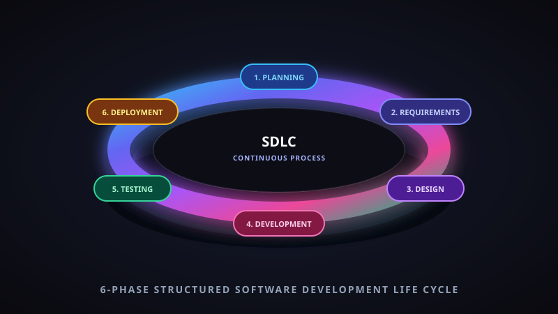
Click to enlargeHow the industry responded to the software crisis over the decades.
The term "Software Crisis" was coined. Software engineering was proposed as a discipline.
Structured programming and the Waterfall lifecycle brought order to chaotic development processes.
Object-Oriented Programming and Computer-Aided Software Engineering tools improved code reuse and design.
The Capability Maturity Model formalized process improvement. Open source revolutionized collaboration.
17 practitioners published the Agile Manifesto, shifting focus from heavy processes to adaptive development.
Cloud computing, containerization (Docker), and CI/CD pipelines transformed software delivery.
AI code assistants, automated testing, and intelligent DevOps mark the next evolution in addressing the crisis.
Fundamental values that underpin every successful software project.
The best solutions are often the simplest. Avoid unnecessary complexity in design, architecture, and code.
Regularly reflect on processes and outcomes. Iterate, learn from mistakes, and evolve your practices.
Shift testing left. Catch defects early when they're cheapest to fix. Automate everything repeatable.
Involve users and stakeholders throughout development. Their feedback is the compass for delivering real value.
We Appreciate Your Time
The best way to predict the future of software is to engineer it — one solution at a time.